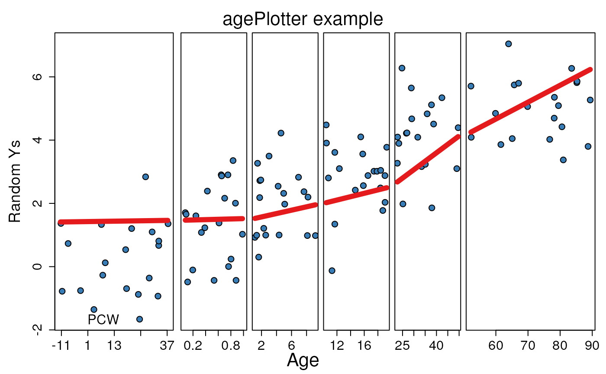
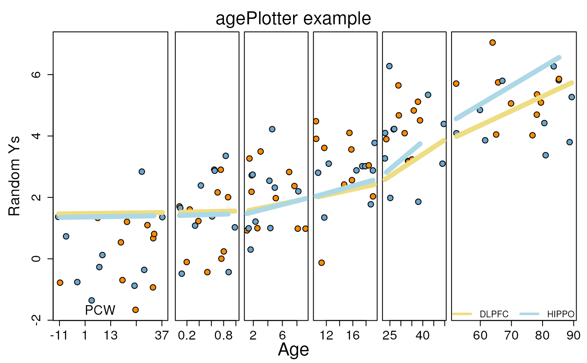

Plots a Y output by age.
A vector with the Y outcome.
A vector with the age information.
A model matrix.
A character vector with the main title.
A logical indicating whether to smooth Y.
A logical indicating whether to add jitter on the X axis.
The location of the age legend.
A logical indicating whether to sort the observations by age.
A length two vector with the Y axis limits.
The age cutoffs for the different groups.
The Y axis label.
An integer indicating the palette color to use for the points.
An integer indicating the paletter color to use for the lines.
The output of fitted on a linear model
if you already calculated it. If so, y will be ignored.
Additional parameters to pass to plot.
A nice plot =)
pointColor can be a vector of length equal to age and have
multiple values in which case lineColor has to have a length
equal to the number of unique pointColor values. Specifying
this will draw a line for each unique pointColor.
def.par <- par(no.readonly = TRUE) # save default, for resetting...
## Generate some Ys
set.seed(20190827)
y <- as.vector(vapply(0:5, function(x) rnorm(20, mean = x), numeric(20)))
## Generate some ages
age <- as.vector(
mapply(runif,
c(-1, 0, 1, 10, 20, 50), c(0, 1, 10, 20, 50, 90),
n = 20
)
)
## Make the age plot with a regression line across age vs Y
agePlotter(y, age,
mainText = "agePlotter example",
ylab = "Random Ys",
mod = model.matrix(~age),
ageBreaks = c(-1, 0, 1, 10, 20, 50, 100)
)

## Define line and point colors
p_cols <- rep(rep(c("skyblue3", "dark orange"), each = 10), 6)
l_cols <- c("lightgoldenrod", "light blue")
## Make the plot with the above colors
agePlotter(y, age,
mainText = "agePlotter example",
ylab = "Random Ys",
mod = model.matrix(~age),
ageBreaks = c(-1, 0, 1, 10, 20, 50, 100),
pointColor = p_cols,
lineColor = l_cols
)
legend("bottom", c("DLPFC", "HIPPO"),
col = l_cols, lwd = 3, bty = "n",
ncol = 2
)

par(def.par) #- reset to default